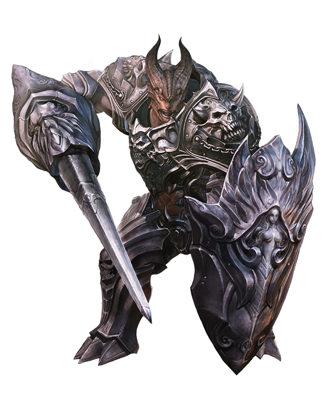
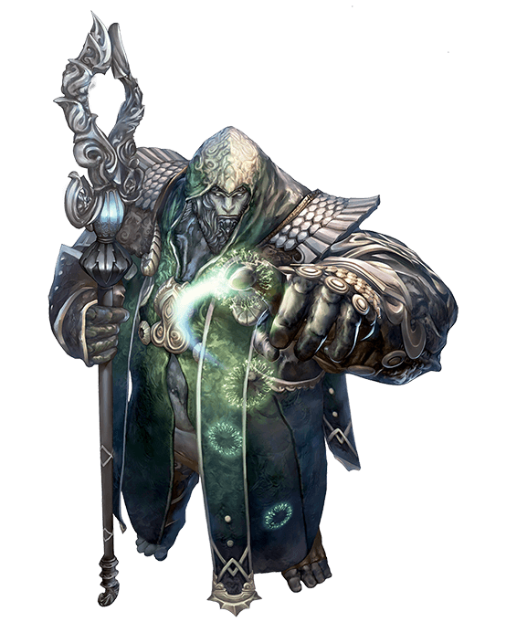
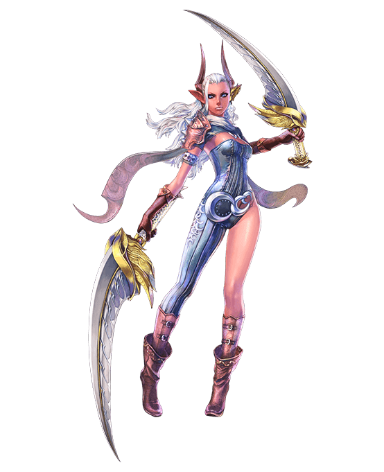
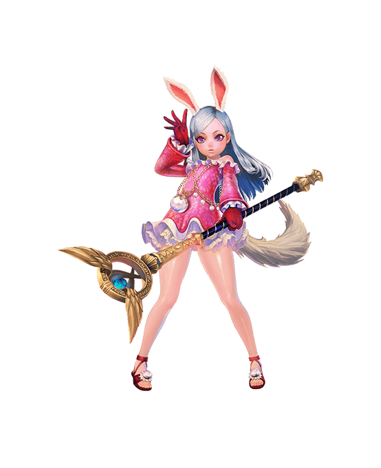
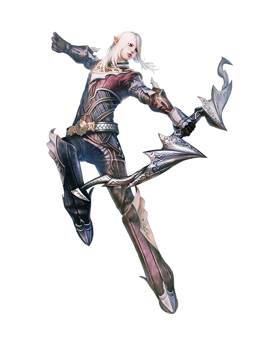
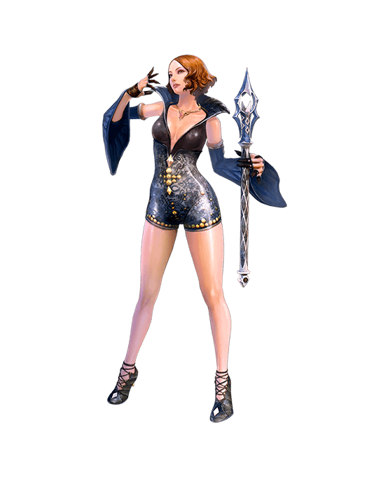
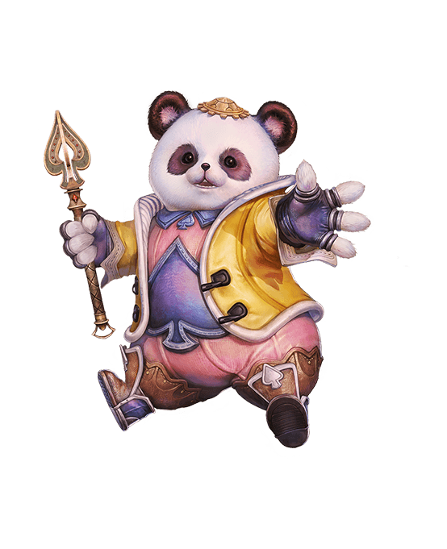

In TERA, you aim, dodge, and time your attacks for an intense and rewarding tactical combat experience. TERA’s expansive content is totally free to play, from character creation all the way to level 70 and beyond.
RACES

AMAN
Amani are always the loudest voices in defense of freedom—either their own, or someone else’s—and once given, will never go back on their word.

BARAKA
A peaceful and noble race, barakas are nonetheless ferocious in defense of the weak.

CASTANIC
Known for their dark, wry humor and bold manner, castanics refuse to be chained to their dark past, and strive each day to forge a new future.

ELIN
Never aging, the wise and battleworn elins still appear as vulnerable and innocent as their goddess was in the moment of their creation.

HIGH ELF
The high elves' historical and magical knowledge make them the caretakers of culture for the entire world.

HUMAN
Cursed by their creator to wander without a homeland, humans turned adversity to advantage during their long exile by studying the culture and crafts of other races.

POPORI
Nature spirits awakened by the elins, a popori’s diminutive stature and fuzzy appearance belie their instinctive ferocity in battle.